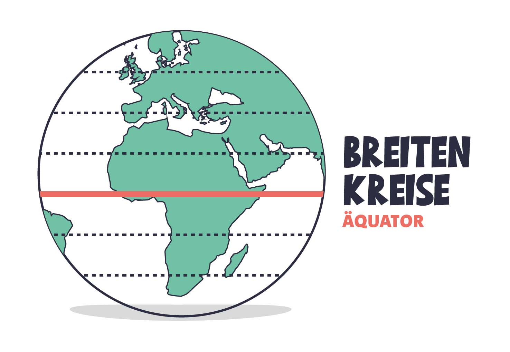
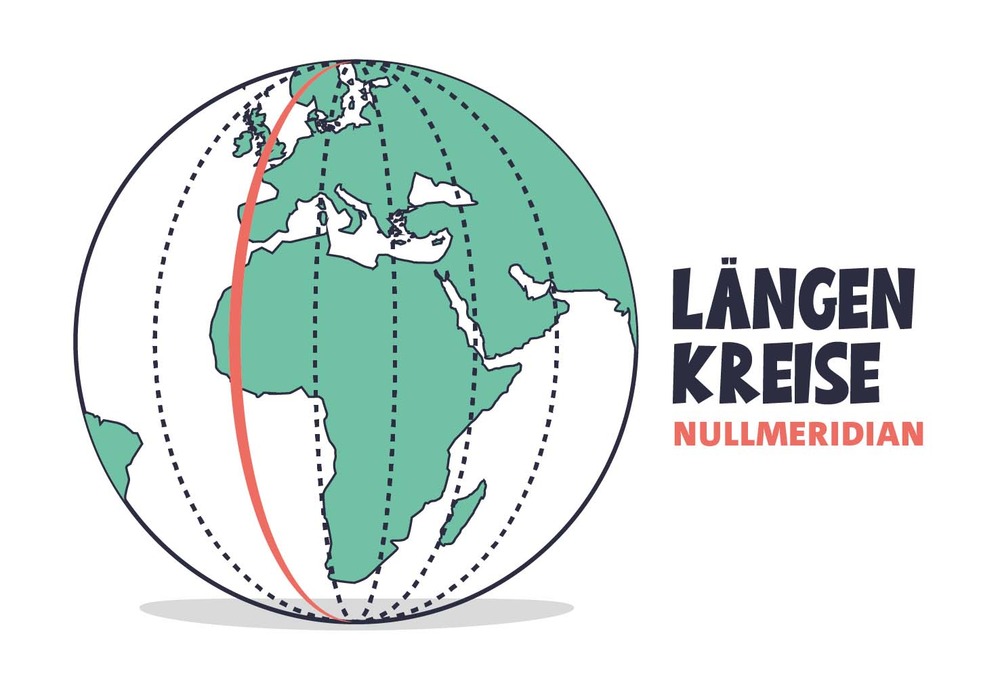
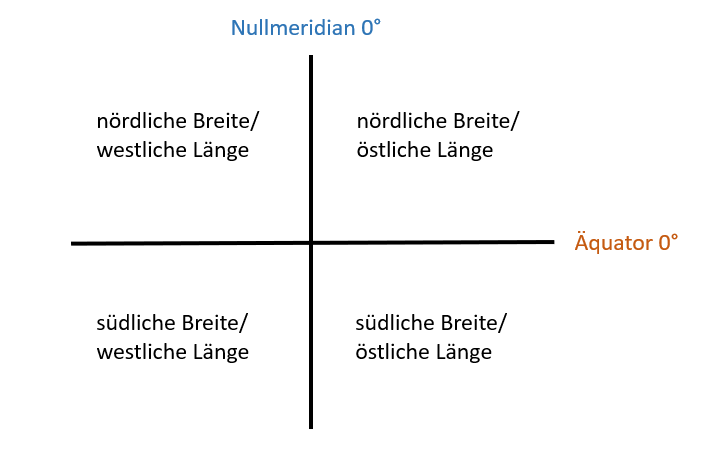
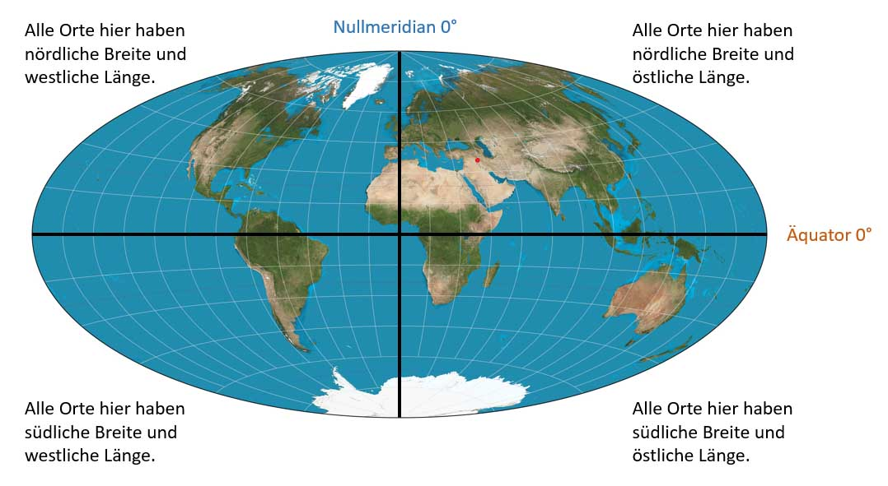

Gradnetz
Das Gradnetz der Erde ist wie ein unsichtbares Netz aus Linien, das über die ganze Erde gespannt ist, um uns zu helfen, Orte zu finden. Denn mit dem Gradnetz der Erde ist eine genaue Lage- und Ortsbestimmung möglich. Mit seiner Hilfe können Orte auf der Erde oder Positionen von Schiffen auf den Weltmeeren genau festgelegt oder bestimmt werden. Zur Angabe der Positionen wurden die Linien benannt und erhielten eine Gradeinteilung. Zum Gradnetz der Erde gehören Breitenkreise und Längenkreise.
 |
 |
|
| Diese Linien verlaufen von links nach rechts, also horizontal, und sind wie die Streifen auf einem Fußball. Die wichtigste und längste Linie ist der Äquator, der die Erde in die Nord- und Südhalbkugel teilt. Alle Breitenkreise verlaufen parallel zum Äquator und werden zum Nordpol bzw. Südpol immer kleiner. Der Abstand zwischen zwei Breitenkreisen beträgt 111 km. Breitenkreise sagen uns also, wie weit nördlich oder südlich ein Ort vom Äquator entfernt ist. Sie werden in Grad gemessen, von 0° am Äquator bis 90° am Nord- oder Südpol. Orte die nördlich des Äquators liegen, erhalten die Bezeichnung nördliche Breite. Alle Orte südlich des Äquators werden mit südlicher Breite benannt. Nach Norden und Süden gibt es jeweils 90 Breitenkreise. |
Diese Linien verlaufen vertikal, das heißt vom Nord- zum Südpol. Sie sind ein bisschen wie die Spalten einer Orange. |
Schau dir zur Veranschaulichung die folgende Skizze an |
Nun übertragen wir die Skizze auf die Weltkugel
|
|
Wenn du die Breitenkreise und Längenkreise eines Ortes kennst, kannst du genau sagen, wo er sich auf der Erde befindet, fast wie ein riesiges Koordinatensystem. Das hilft uns, Karten zu machen und uns auf der Erde zu orientieren! Durch die Einteilung der Erde durch den Äquator und den Nullmeridian entstehen 4 Quadranten, ähnlich einem mathematischen Koordinatensystem. |